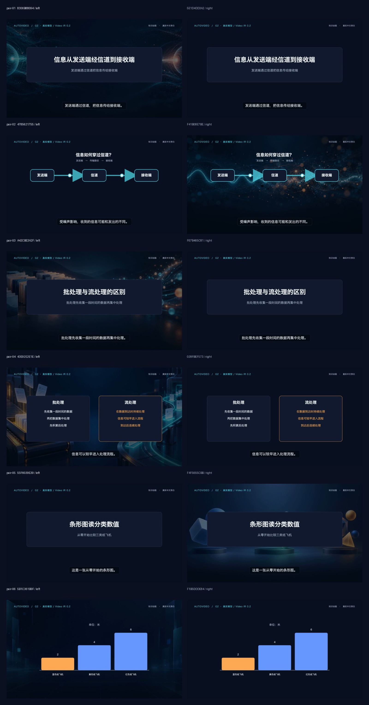

从资料调研、研究报告和文稿，到配音、画面、字幕、视频与发布管理的本地工作流。
介绍
由两个模块组成：研究控制台负责研究任务、信息源、周期调度、文稿配方和视频工作流；AutoVideo 负责配音、视觉规划、Remotion 渲染、字幕、片头片尾和成片交付。
核心功能
- 研究任务、信息源与周期调度
- 文稿配方与视频工作流管理控制台
- 配音、视觉规划、字幕与片头片尾
- Remotion 渲染与成片交付、发布管理
截图


 GitHub ↗
GitHub ↗
从资料调研、研究报告和文稿，到配音、画面、字幕、视频与发布管理的本地工作流。
由两个模块组成：研究控制台负责研究任务、信息源、周期调度、文稿配方和视频工作流；AutoVideo 负责配音、视觉规划、Remotion 渲染、字幕、片头片尾和成片交付。
